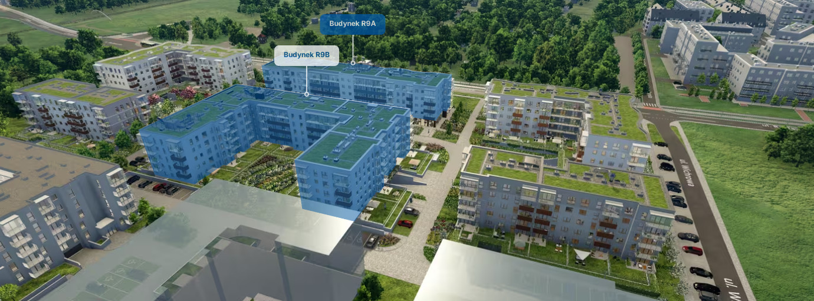

We wspólnocie Planty Racławickie IV
Trwa ładowanie danych...
Pobieranie szczegółów...
Aby przyśpieszyć proces, zbieramy upoważnienia do przeprowadzenia zmiany zarządcy.
Upoważnienie jest terminowe (do końca tego roku) i pozwala jeden z 3 upoważnianych osób do wystąpienia w imieniu i dokonania zmiany zarządcy nieruchomości.
Potrzebujemy zebrać upoważnienia od 50%+1 właścicieli mieszkań. Po zebraniu tej liczby zwołujemy zebranie i dokonujemy zmiany zarządcy.
Zarządce zmieniamy na Prime Project - tą samą firmę która opiekuje się już pierwszym etapem Plant Racławickich i osiedlem tuż obok.
Upoważnienie możesz:
Podpisać w klubie mieszkańca. Spotkasz kogoś z czystymi upoważnieniami we wtorek 25 marca o godzinie 17:30. Na miejscu będziesz mógł/mogła porozmawiać o zmianie i złożyć podpis.
Możesz też pobrać, wydrukować, podpisać i wrzucić do skrzynki pocztowej Wichrowa 4a/43 (oznaczona tu zmiana zarządcy).
Jeśli nie możesz podpisać fizycznie, odezwij się na naszej grupie, zorganizujemy podpis zdalnie.
